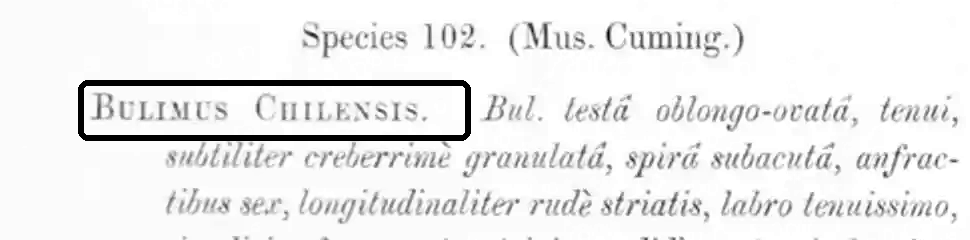
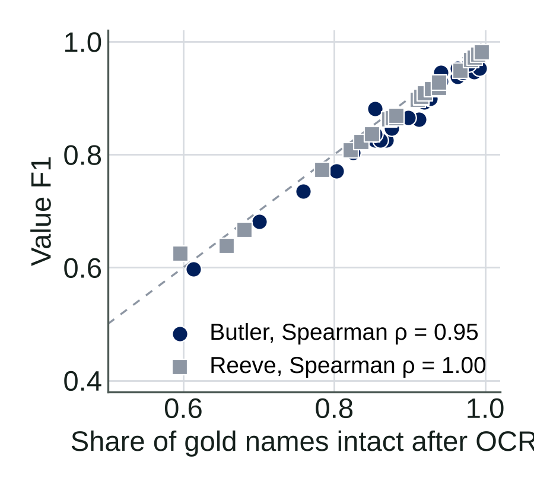
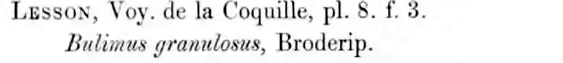
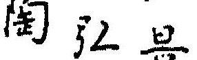

01 · Motivation
An agent that quotes the OCR faithfully can still file the wrong species.


02 · Methodology
Same page, three texts: the model points, code writes the value
Point, not write
Code finds the quote in line 2 and slices the value from the text. A quote that differs from the text is logged as a silent correction.
03 · Results
Most evidence was lost at reading and linking; extraction lost little on these pages
OCR · Butler
0.60 → 0.95
Extraction value F1
Entity linking
14 / 34
Failed links
Model agreement
99–100%
Despite shared errors
Two models can agree on the same mistake.
Proposed auto-accept sets still contained 50 / 75 errors on legacy OCR (Butler / Reeve).
A · OCR quality matters

B · Name preservation vs F1

Page CER does not predict F1 (ρ = −0.11 / −0.61)
C · Correct names, failed links

04 · Try it
Printed, or written by OCR?

Reeve 1849, BHL page 8966790
Which name is on the page?
Both look plausible. Only one is supported by the source.
Answer: B. A is a modern OCR model's reading.
Exploratory: classical Chinese

→ 陶弘景本草綱目: the model writes the modern form.
05 · Proposed Framework
Code owns the text; the model points and quotes.
06 · Conclusion
Three rules for evidence-grounded scientific agents
- Gate reading on name survival, not average error. Page CER did not predict F1 (ρ = −0.11 / −0.61).
- Spend reasoning on linking, not extraction. Small models extract almost as well at ~1/15 the cost; an LLM linker raised recall 0.59 → 0.91.*
- Verify against the source, not consensus. 99–100% model agreement still passed 50 and 75 errors.
Scope: two English printed books, pre-registered. * Exploratory.
Connect & Explore
A map of AI4S people, research,
companies and capital, read at source.
 ai4s.fyi
ai4s.fyi LinkedIn
LinkedInDekun (Gloria) Sun on LinkedIn · @gloria_sun on X